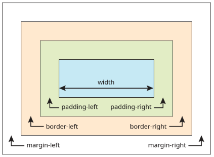

Размеры блока
Размеры блока — это комплексная величина и складывается из значений разных свойств. Чтобы получить реальную полную ширину элемента, мы должны сложить значения свойств width, padding и border вместе. Если вы установили для width 400 пикселей, затем добавили 20 пикселей padding и задали border 10 пикселей на каждой стороне, фактическая полная ширина элемента становится 460 пикселей. То же самое касается и высоты.
Однако, в процессе верстки, это не всегда бывает удобно и блочная модель, может быть изменена, чтобы вычисления происходили иначе. Прежде, чем двигаться дальше, рассмотрим подробнее особенности формирования ширины и высоты блока.
Ширина блока
Ширина блока представляет собой сумму значений следующих свойств:
- width — ширина содержимого;
- padding-left и padding-right — поле слева и справа от содержимого;
- border-left и border-right — толщина границы слева и справа;
- margin-left и margin-right — отступ слева и справа.
На рис. схематично изображены свойства, влияющие на ширину блока.
При этом какие-то свойства могут отсутствовать и на размер влияние не оказывают.

Обратите внимание, что свойство width задаёт ширину содержимого, а не всего блока целиком.
Если значение width не задано, то оно по умолчанию устанавливается как auto. В этом случае ширина блока будет занимать всю доступную ширину при сохранении значений padding, border и margin. Под доступной шириной в данном случае подразумевается ширина содержимого родительского блока, а если родителя нет, то ширина окна браузера.
Если свойство width задано, то его значение добавляется к общей ширине блока. В качестве примера рассмотрим следующий стиль.
Ширина блока в данном случае будет равна 442 пикселя; эта величина получается складыванием значения ширины содержимого плюс поле слева, граница слева и отступ слева, плюс поле справа, граница справа и отступ справа. Суммируем все числа.
Ширина = 400 + 10 + 10 + 4 + 4 + 7 + 7 = 442
Ширину содержимого можно задавать в процентах, но в этом случае общая ширина блока может превысить ширину веб-страницы, что приведёт к появлению горизонтальной полосы прокрутки.
Высота блока
Высота блока формируется по тем же правилам, что и ширина. А именно, высота складывается из значений следующих свойств:
- height — высота содержимого;
- padding-top и padding-bottom — поле сверху и снизу от содержимого;
- border-top и border-bottom — толщина границы сверху и снизу;
- margin-top и margin-bottom — отступ сверху и снизу.
Если свойство height не указано, то оно считается как auto, в этом случае высота содержимого вычисляется автоматически.
На рис. показаны свойства, влияющие на высоту блока.
Различия формирования ширины и высоты блока
Несмотря на схожесть принципов построения ширины и высоты, у них есть некоторые различия.
Превышение размеров блока
Если содержимое превышает размер блока при заданном height, то содержимое отображается поверх блока
Чтобы избежать подобного поведения, свойство height лучше не задавать, тогда высота блока будет вычисляться автоматически.
Впрочем, бывают случаи, когда высота должна быть чётко указана. тогда рекомендуется добавить свойство overflow — значение auto устанавливает полосы прокрутки при необходимости (пример 2), а значение hidden скрывает всё, что не помещается в заданные размеры.
Тогда рекомендуется добавить свойство overflow — значение auto устанавливает полосы прокрутки при необходимости, а значение hidden скрывает всё, что не помещается в заданные размеры.
Высота блока задана явно и если содержимое не помещается в блок по высоте, то появляется вертикальная полоса прокрутки.
Лев ревёт только в том случае, когда сообщает, что территория принадлежит ему или провозглашает себя царём природы.
Охотничий участок льва может иметь длину и ширину до тридцати километров.
Высота блока в процентах
Установка значения высоты в процентах обычно не приводит к каким-либо заметным результатам, поскольку высота родителя браузером не вычисляется. Чтобы проценты начали работать, высота родителя должна быть задана явно.
Здесь для <div> родителем выступает элемент <body>, поэтому для него устанавливаем значение height равным 100%.
В то же время на <body> действуют те же правила, что и на <div>. Поэтому для родителя <body>, которым является <html>, также требуется поставить значение height равным 100%. Только в этом случае высота блока в процентах будет зависеть от высоты веб-страницы.
Алгоритм блочной модели: box-sizing
Таким образом, мы выяснили, что когда речь заходит о размерах элементов, учитываются все части блочной модели. То есть, любые границы, отступы и поля вносят свой вклад в горизонтальный и вертикальный размер элемента. Считать итоговый размер становится не удобно, особенно когда в качестве значений встречается комбинация пикселей и процентов.
Есть способы обхода неудобства подсчёта ширины и высоты блока путем введения свойства box-sizing, которое изменяет алгоритм вычисления и позволяет содержимому включать в себя границы. В итоге, всё содержимое подстроит свои размеры, чтобы уместиться в рамках одного общего размера.
box-sizing
Применяется для изменения алгоритма расчёта ширины и высоты элемента.
Позволяет, чтобы свойства width и height задавали размеры не содержимого, а размеры блока.
Синтаксис
Значения
-
content-box
- Является значением по умолчанию, при этом свойства width и height задают ширину и высоту содержимого и не включают в себя значения margin, padding и border. -
border-box
- Свойства width и height включают в себя значения padding и border, но не margin.
Значение border-box намного упрощает нам математику. Если мы хотим, чтобы весь элемент был 400 пикселей в ширину, он останется 400 пикселей в ширину, независимо от того, какие значения padding или border мы к нему добавляем.
Кроме того, мы можем легко смешивать значения длины. Скажем, мы хотим, чтобы наш блок занимал 40% в ширину. Добавление padding 20 пикселей и border 10 пикселей для всех сторон элемента не сложно и мы по-прежнему можем гарантировать, что фактическая ширина нашего блока останется 40%, несмотря на использование пикселей в другом месте.